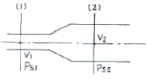
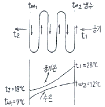
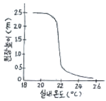
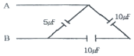

건축설비기사 (2007-03-04 기출문제)
1과목: 건축일반
1. 학교의 배치계획 중 분산병렬형에 대한 설명으로 옳지 않은 것은?
- 일종의 핑거 플랜이다.
- 화재 및 비상시에 불리하고 일조 . 통풍 등 환경조건이 불균등하다.
- 펀복도로 할 경우 복도면적이 너무 크고 단조로워 유기적인 구성을 취하기가 어렵다.
- 구조계획이 간단하고 규격형의 이용도 편리하다.
(정답률: 알수없음)

2. 다음 철근콘크리트구조에 관한 설명 중 옳지 않은 것은?
- 단순보의 스터럽은 중앙부보다 양단부에 많이 넣는다.
- 단순보의 하부에는 인장력이 생겨 균열되므로 재의 축방향으로 철근을 넣어 보강한다.
- 원형 . 다각형 기둥에서 주근 주위를 나선형으로 돌려감은 철근을 띠철근 또는 굽힌철근 이라고 한다.
- 기둥에서는 기둥을 보강하는 세로철근, 즉 축방향철근이 주근이다.
(정답률: 알수없음)
3. 알루미늄 새시에 대한 설명으로 틀린 것은?
- 알루미늄 새시는 시틸 새시에 비해 강도가 작다.
- 공작이 어렵고 기밀성이 떨어진다.
- 여닫음이 경쾌하고 미려하다.
- 녹슬지 않고 수명이 길다.
(정답률: 70%)
4. 병원건축의 형식 중 평면분산식으로 각 건물은 3층 이하의 저층건물 이며, 외래부, 부속진료시설, 병동을 각각 별동으로 하여 분산시키고 복도로 연결하는 형식은?
- 엘보 엑세스(elbow access)
- 분관식(pavilion type)
- 집중식(biock type)
- 애리나형(arena type)
(정답률: 100%)
5. 목구조에서 마루널을 제혀쪽매로 하는 가장 주돈 이유는?
- 마루널의 두께와 무관하게 적용이 가능하다.
- 옷이 진동으로 솟아오르지 않고 미려하다.
- 시공이 가장 용이하다.
- 접합부 가공이 가장 용이하다.
(정답률: 알수없음)
6. 다음 중 조도에 관한 설명으로 옳은 것은?
- 빛을 발하는 점에서 어느 방향으로 향한 단위 입체각당의 발산광속을 말한다.
- 빛의 방향과 수직인 명의 빛의 조도는 광원의 광도에 비례하고 거리의 제곱에 반비례한다.
- 어느 면의 조도는 광도를 그 면의 겉보기 면적으로 나눈 값이다.
- 조도의 측정단위는 루멘이다.
(정답률: 알수없음)
7. 건축물에 루버(louver)를 설치하는 가장 주된 이유는?
- 자연환기를 유지하기 위하여
- 외관상 변화를 주기 위하여
- 직사광선을 막기 위하여
- 비를 막기 위하여
(정답률: 알수없음)
8. 사무실 배치방식에서 오피스 랜드스케이프에 대한 설명으로 옳지 않은 것은?
- 바닥면적을 효율적으로 사용할 수 있다.
- 변화하는 작업의 패턴에 따라 신속하게 대처할 수 있다.
- 소음 등으로 분위기가 산만해질 수 있다.
- 독립성과 쾌적감의 이점이 있다.
(정답률: 알수없음)
9. 다음 중 결로발생의 방지 방법이 아닌 것은?
- 실내에서 수증기 발생을 억제한다.
- 비난방실 등으로의 수증기 침입을 억제한다.
- 적절한 투습저항을 갖춘 방습층을 단열재의 저온측에 설치한다.
- 벽체의 표면온도를 실내공기의 노점온도보다 크게 한다.
(정답률: 알수없음)
10. 주택의 각실 계획에 관한 설명 중 가장 옳지 않은 것은?
- 거실은 주행위 개개의 복합적인 기능을 갖고 있으므로 이에 적합한 가구와 어느 정도 활동성을 고려한 계획이 되어야 한다.
- 노인방은 조용해야 하므로 주택 2층의 쿡 측에 배치하는 것이 가장 바람직하다.
- 식당의 최소 면적은 식탁의 크기와 모양, 의자의 배치 상태. 주변 통로와의 여유공간 등에 의하여 결정된다.
- 주방은 거실 가까이에 두어 서비스 동선을 짧게 배려하는 것이 바람직하다.
(정답률: 알수없음)
11. 두께 20cm인 콘크리트벽에서 내벽표면온도 18℃, 외벽표면온도-2℃ 일 때 벽체의 통과 열량은?(오류 신고가 접수된 문제입니다. 반드시 정답과 해설을 확인하시기 바랍니다.)
- 36 kcal/m2h
- 40 kcal/m2h
- 140 kcal/m2h
- 360 kcal/m2h
(정답률: 64%)
12. 인체의 열적 쾌적감에 영향을 미치는 실내환경 요소와 가장 거리가 먼 것은?
- 기온
- 습도
- 공기의 청정도
- 기류
(정답률: 알수없음)
13. 건물의 주요 구성 부분 중 지붕, 바닥판 등의 하중을 부담하는 수직재로서 벽체를 구성하기도 하는 것은?
- 기초
- 기둥
- 보
- 수장
(정답률: 알수없음)
14. 사무소 건축의 코어 형식 중 중심코어형에 대한 설명으로 옳지 않은 것은?
- 2방향 피난에 이상적인 형식으로 방재상 가장 유리하다.
- 구조코어로서 바람직한 형식이다.
- 외관이 획일적으로 되기 쉽다.
- 바닥면적이 큰 경우에 많이 사용된다.
(정답률: 알수없음)
15. 곡면판이 지니는 역학적 특성을 응용한 구조로서 외력은 주로 판의 연내력으로 전달되기 때문에 경량이고 내력이 큰 구조물을 구성할 수 있는 구조는?
- 철판구조
- 셀구조
- 현수구조
- 입체크러스구조
(정답률: 알수없음)
16. 다음 중 벽돌벽에 생기는 백화를 방지하는 방법과 가장 관계가 먼 것은?
- 벽돌의 원료인 점토와 사용수에 염류가 섞인 벽돌을 사용한다.
- 파라핀 도료를 칠한다.
- 채양, 돌림띠 등으로 벽면에 빗물이 흘러 내리지 않도록 한다.
- 벽돌쌓기 출눈은 충분한 사충을 하도록 한다.
(정답률: 알수없음)
17. 공동주택의 건물단면형식 중 주거단위의 단면을 단층형과 복층형에서 동일층으로 하지 않고 반층씩 엇나게 하는 형식은?
- 스킵 플로어 형식
- 필로티 형식
- 오픈 형식
- 플랫 형식
(정답률: 59%)
18. 계단에서 디딤판 끝에 미끄럼방지용으로 대어주는 철물의 명칭은?
- 코너비드
- 논슬립
- 레지스터
- 테라코타
(정답률: 알수없음)
19. 건축 연면적 2,000cm2인 임대사무소에 수용할 수 있는 적정 인원수는?
- 50명
- 200명
- 400명
- 1000명
(정답률: 알수없음)
20. 다음 중 일반적으로 병원건축의 시설규모를 결정하는데 기준이 되는 것은?
- 환자 병상수
- 간호사수
- 의사수
- 건물의 용적류
(정답률: 알수없음)
2과목: 위생설비
21. 직경 200mm의 강관을 이용하여 매분 2400L/min의 물을 흘려보낼 때 강관 내의 유속은?
- 1.27m/sec
- 1.72m/sec
- 0.04m/sec
- 0.4m/sec
(정답률: 알수없음)
22. 급수기구의 최저필요압력으로 부적절한 것은?
- 일반수전 : 0.3kg/cm2
- 샤워기 : 0.7kg/cm2
- 대변기 세정밸브(일반대변기용) : 0.7kg/cm2
- 소변기 세정밸브(벽걸이형 소변기) : 0.5kg/cm2
(정답률: 알수없음)
23. 다음의 국소식 급탕방식에 대한 설명 중 옳지 않은 것은?
- 급탕 개소마다 가열기의 설치공간이 필요하다.
- 건물 완공 후에 급탕 개소의 증설이 비교적 용이하다.
- 배관길이가 길어 열손실이 크다.
- 용도에 따라 필요한 개소에서 필요한 온도의 탕을 비교적 간단하게 얻을 수 있다.
(정답률: 알수없음)
24. 온도 20℃, 길이 100m인 동관에 탕이 흘러 60℃가 되었을 때, 동관의 팽창량은 얼마인가? (단, 동관의 선팽차계는 0.171×10-4 이다.)
- 66.4 mm
- 68.4 mm
- 78.4 mm
- 78.4 mm
(정답률: 알수없음)
25. 다음 중 위생기구의 재질 조건과 가장 관계가 먼 것은?
- 내식성 및 내마모성이 클 것
- 흡수성이 클 것
- 각종 현상 및 크기로 제작하기가 쉬울 것
- 항상 청결을 유지할 수 있도록 표면이 매끄럽고 아름다울 것
(정답률: 알수없음)
26. 다음의 통기배관에 대한 설명 중 옳지 않은 것은?
- 통기관과 우수수직관은 겸용하는 것이 좋다.
- 간접배수계통의 통기관은 다른 통기계통에 접속하지 말고 단독으로 대기 중에 개구한다.
- 각개통기방식에서는 반드시 통기수직관을 설치한다.
- 배수수직관의 상부는 연장하여 신정통기관으로 사용하여 대기 중에 개구한다.
(정답률: 알수없음)
27. 다음의 옥내소화전설비의 화재안전기준에 관한 설명 중 옳은 것은?
- 소방대상물의 어느 층에 있어서도 당해 층의 옥내소화전(5개 이상이 설치된 경우는 5개)을 동시에 사용할 경우 각 소화전의 노즐선단에서의 방수압력은 최소 2.1kg/cm2이상이어야 한다.
- 펌프의 토출측 주배관의 구경은 유속이 최대 1.5m/s이하가 될 수 있는 크기 이상으로 하여야 한다.
- 수원은 그 저수량이 옥내소화전의 설치개수가 가장 많은 층의 설치개수(옥내소화전이 5개 이상 설치된 경우에는 5개)에 2.6m3를 곱한 양 이상이어야 한다.
- 수원은 규정에 따라 산출된 유효수량의 6분의 1이상을 옥상에 설치하여야 한다.
(정답률: 알수없음)
28. 어는 사무소 건물의 바닥면적의 합계가 5,000m2 일 때, 필요한 급수량은? (단, 이 건물의 유효면적비율은 연면적의 60%이고, 유효면적당 인원은 0.2〔인/m2〕이며, 1인 1일당 급수량은 100〔L/c/d〕이다.)
- 30 m3 /d
- 60 m3 /d
- 300 m3 /d
- 600 m3 /d
(정답률: 60%)
29. 다음 중 트랩의 봉수 파괴 원인이 아닌 것은?
- 수격작용
- 자기사이폰작용
- 증발현상
- 모세관현상
(정답률: 79%)
30. 다음 소방시설 중 소화활동설비에 속하지 않는 것은?
- 제연설비
- 상수도소화용수설비
- 연결송수관설비
- 비상콘센트설비
(정답률: 알수없음)
31. 원심펌프의 일종으로 날개의 바깥쪽에 가이드 베인(guide vane) 을 설치한 것은?
- 볼류트 펌프
- 터빈 펌프
- 피스톤 펌프
- 기어펌프
(정답률: 80%)
32. 다음의 급수배관에 대한 설명 중 옳은 것은?
- 관경의 크기와 마찰 손실은 관계가 없다.
- 마찰 손실은 유량에는 관계가 있지만 유속에는 관계가 없다.
- 관의 균등표를 이용하여 관경 선정시에는 동시 개구수를 고려할 필요가 없다.
- 급수관을 선정할 때 사용하는 Hunter 곡선은 동시 사용율이 고려된 것이다.
(정답률: 알수없음)
33. 수질의 용어에 대한 조합 중 틀린 것은?
- BOD : 생물화학적 산소 요구량
- BOD 용적부하 : 유입수BOD - 유출수BOD/유입수 BOD
- SS : 부유물질
- COD : 화학적 산소 요구량
(정답률: 25%)
34. 도시가스설비에서 시간에 따라 변동하는 수요에 대응하여 공급되는 가스압력을 필요 압력으로 조정하는 기구는?
- 가스홀더(gas holder)
- 가압장치(pressure device)
- 감압기(reducing gauge)
- 정압기(governor)
(정답률: 알수없음)
35. 다음 중 급탕배관의 재료로 가장 부저강한 것은?
- 내열염화비닐리아닝 강관
- 동관
- 스테인리스 강관
- 아연도강관
(정답률: 알수없음)
36. 다음 중 원심식 펌프의 일종으로 와권케이싱과 회전차로 구성되는 펌프는?
- 볼류트 펌프
- 피스톤 펌프
- 베인 펌프
- 마찰 펌프
(정답률: 알수없음)
37. 정화조에서 호기성 미생물의 활동이 가장 활발한 곳은?
- 부패조
- 신화조
- 소독조
- 여과조
(정답률: 50%)
38. 펌프에 관한 설명 중 옳은 것은?
- 동일펌프로 동일 송수계통에 양수하고 있는 경우 펌프의 회전수가 2배로 되면 양정은 4배로 된다.
- 비속도가 작은 펌ㅍ는 양수량의 변화에 따라 양정의 혐화도 크다.
- 특성이 같은 펌프를 2대 병렬 운전하면 양수량과 양정은 1대일 경우의 2배로 된다.
- 특성이 같은 펌프를 2대 직렬 운전하면 양수량은 1대일 경우의 2배로 된다.
(정답률: 40%)
39. 배수, 통기계통에서 실시하는 만수시험의 시험수두 및 유지시간에 대한 설명으로 옳은 것은?
- 시험수두는 최소 3mAq로 하며, 유지시간은 최소 30분으로 한다.
- 시험수두는 최소 3mAq로 하며, 유지시간은 최소 60분으로 한다.
- 시험수두는 최소 6mAq로 하며, 유지시간은 최소 30분으로 한다.
- 시험수두는 최소 6mAq로 하며, 유지시간은 최소 60분으로 한다.
(정답률: 55%)
40. 다음 중 특수통기방식의 일종인 소벤트시스템에 사용되는 이음쇠는?
- 팽창관
- 섹스티아 밴드관
- 섹스티아 이음쇠
- 공기분리 이음쇠
(정답률: 알수없음)
3과목: 공기조화설비
41. 반 건물의 공기조화용 송풍기중 저속덕트용으로 가장 많이 사용되는 것은?
- 다익 송풍기
- 축류 송풍기
- 익형 송풍기
- 사일렌트 송풍기
(정답률: 알수없음)
42. 다음 가변훙량 유니트중 부하변동에 따른 동력용 에너지 절약을 별로 기대할 수 없는 것은?
- 교축형
- 슬롯형
- 유인형
- 바이패스형
(정답률: 40%)
43. 천정 취출구에서 취출을 하는 경우에 확산반경에 대한 설명으로 옳은 것은?
- 거주영역에서 평균풍속이 0.1~0.125m/s로 되는 최대 단면적의 반경을 최대확산반경이라 한다.
- 거주영역에서 평균풍속이 0.125~0.25m/s로 되는 최대 단면적의 반경을 최소확산반경이라 한다.
- 인접한 취출구의 최소확산반경이 겹치면 편류현상이 생긴다.
- 거주영여에는 최대확산반경이 미치지 않는 영역이 있어도 무방하다.
(정답률: 알수없음)
44. 다음 신축이름 중 방열기 주변배관에 사용되는 것은?
- 루프형
- 벨로즈형
- 슬리브형
- 스위블형
(정답률: 알수없음)
45. 송풍기의 송풍량 제어방법에서 제어효율이 가장 나쁜 방식은?
- 스크롤 댐퍼제어
- 츱입 댐퍼제어
- 흡입 베인제어
- 회전수제어
(정답률: 20%)
46. 고온수 난방의 배곤에 관한 설명으로 옳은 것은?
- 고온수로 실내에 직접공급하는 것이 일반적이다.
- 대량의 열량공급은 용이하지만 배관의 지름은 저온수 난방보다 크게 된다.
- 관내압력이 높기 때문에 관 내면의 부식문제가 증기난방에 비해 심하다.
- 가압장치로는 질소가스가압, 증기가압 등의 방식이 이용 된다.
(정답률: 47%)
47. 다음 배관 재료 중 내열성이 가장 양호한 것은?
- 아연도강관
- 동관
- 스테인레스관
- 경질염화비닐관
(정답률: 알수없음)
48. 다음 배연설비에 관한 기술 중 부적당한 것은?
- 화재의 확대바지가 주목적이다.
- 자연배연방식과 기계배연방식이 있다.
- 배연구역면적은 1000m2 이하로 한다.
- 배출기의 흡입측 덕트풍속은 15m/s 이하로 한다.
(정답률: 54%)
49. 다음 그림에서 덕트 (1)점의 풍속 V1 = 14m/s, 정압 PS1 = 5mmAq, (2)점의 푸옥 V2 = 6m/s, 정압 PS2 = 10mmAq일 때 (1), (2)점 간의 전압손실(mmAq)은? (단. 공기의 비중량은 1.2kg/m3 , 중력가속도 g = 9.8m/s2)

- 4.8
- 9.6
- 14.4
- 19.2
(정답률: 알수없음)
50. 지역난방에 관한 기술로 옳은 것은?
- 열원기기의 고효율 운전이 어렵다.
- 열원설비의 용량은 개개의 건물에 설치할 경우에 비하여 커진다.
- 코-제너레이션 시스템(co-generation system)을 적용할 수 있다.
- 지역난방은 건물의 밀집도가 낮은 농촌 지역에 적합하다.
(정답률: 알수없음)
51. 냉각수 배관에 관한 사항 중 옳지 않은 것은?
- 냉각탑 배수 및 오버플로우관은 일반 배수관에 직결시키지 않는다.
- 냉각수 펌프와 냉각탑이 동일한 레벨이면 냉각탑의 수면보다 낮은 위치에 펌프로 설치한다.
- 냉각수 배관에는 응축기 입구에 스트레이너를 설치한다.
- 냉각수 펌프의 수두는 토출측 보다는 흡입측이 커야 한다.
(정답률: 알수없음)
52. 냉방부하 계산시 구조체의 축열부하에 관한 다음 기술 중 부적당한 것은?
- 구조체의 열용량과 관련이 있다.
- 시간지연(time-lag) 현상을 유발한다.
- 간혈냉방을 하는 경우 예냉부하를 필요로 한다.
- 구조체의 열용량이 클수록 피크로드를 상승시킨다.
(정답률: 알수없음)
53. 인체의 열환경을 평가하기 위한 종합적인 지표로서 가장 바람직한 것은?
- 클로브 온도(Globe temperature)
- M.R.T(Mean radiant temperature)
- A.S.T(Average sur face temperature)
- C.E.T(Corrected effective temperature)
(정답률: 알수없음)
54. 냉동부하의 종류 중 현열 성분만을 가진 것은?
- 조명에서의 발생열
- 인체에서의 발생열
- 실내기구에서의 발생열
- 외창 새시, 문틈에서의 틈새바람
(정답률: 60%)
55. 습공기 선도 상에 표시할 수 있는 습공기의 상태가 아닌 것은?
- 습구온도
- 비열
- 비체적
- 엔탈피
(정답률: 알수없음)
56. 다음 그림에서 대수평균 온도차 MTD를 구하면 얼마인가?

- 13.34℃
- 14.24℃
- 15.74℃
- 16.56℃
(정답률: 34%)
57. 고온수를 이용한 지역난방에 관한 기술 중 옳지 않은 것은?
- 저온수에 비해 순환펌프의 동력을 줄일 수 있다.
- 고압증기를 이용한 지역난방에 비해 높은 위치까지의 공급이 용이하다.
- 유황분이 많은 저질유 사용시 저온부식의 위험이 있다.
- 예열시간이 길어 연료 소비량이 크다.
(정답률: 알수없음)
58. 어떤 실내의 공기온도 분포를 축정한 결과 다음의 그림과 같다고 할 때 예상되는 난방방식은?

- 공기조화에 의한 난방
- 바닥복사 난방
- 대류방열기에 의한 난방
- 온풍로 난방
(정답률: 알수없음)
59. 고압, 대용량의 공조용으로 가장 적합한 보일러는?
- 수관 보일러
- 입형 원통보일러
- 연관 보일러
- 섹셔널 보일러
(정답률: 알수없음)
60. 공조용 코일 설계시에 고려하여야 할 사항 중 틀린 것은?
- 냉수코일의 정면풍속은 2.5m/s가 바람직하다.
- 코일내의 물의 속도는 1.0m/s 전후가 좋다.
- 공기와 냉.온수의 흐름방향은 평행류로 하는 것이 전열효과가 크다.
- 코일의 열수가 증가하면 바이패스 팩터는 감소한다.
(정답률: 알수없음)
4과목: 소방 및 전기설비
61. 다음 중 용량 및 용도에 있어서 쓰임이 다른 하나는?
- 진공차단기(VCB)
- 공기차단기(ABB)
- 자기차단기(MBB)
- 배선용차단기(MCCB)
(정답률: 알수없음)
62. 전력량 1〔kWh〕의 발생열량은 얼마인가?
- 86〔kcal〕
- 360〔kcal〕
- 860〔kcal〕
- 3600〔kcal〕
(정답률: 알수없음)
63. 다음 중 콘덴서의 정전용량을 증가시킬 수 있는 방법과 가장 관계가 먼 것은?
- 유전율을 작게 한다.
- 금속판의 면적을 크게 한다.
- 금속판 간의 거리를 가깝게 한다.
- 금속판 사이에 유전체를 삽입한다.
(정답률: 82%)
64. 다음의 변압기에 대한 설명 중 옳지 않은 것은?
- 송배전 계통은 물론 각 수용가의 가전제품에서 전압을 높이거나 낮추기 위하여 사용되는 전기기기이다.
- 변압기의 원리는 자속의 변화에 의한 전자유도현상을 응용한 것이다.
- 2차 측 코일은 자기유도 작용을 발생시키는 역할을 한다.
- 철심은 자속을 이동시키는 통로의 역할을 한다.
(정답률: 40%)
65. 자동화재탐지설비의 감지기 중 주위의 공기에 일정농도 이상의 연기가 포함되었을 때 동작하는 감지기는?
- 불꽃 감지기
- 이온화식 감지기
- 차동식 감지기
- 보상식 스풋형 감지기
(정답률: 알수없음)
66. 전압과 전류의 위상차 θ가 있는 경우, 교류 전력 중 유효 전력을 나타낸 것은?
- P = VIsinθ〔VAR〕
- P = VIcosθ〔W〕
- P = VI〔W〕
- P = VI〔VA〕
(정답률: 알수없음)
67. 다음 중 배선용 전선의 굵기를 결정할 때 고려할 사항과 가장 관계가 먼 것은?
- 전압 강하
- 외부 온도
- 기계적 강도
- 허용 전류
(정답률: 알수없음)
68. 3상 교류에 대한 설명이 아닌 것은?
- 회전자장을 만든다.
- 각 상간의 위상차는 2π/3〔rad〕이다.
- 큰 전력의 배전에 사용한다.
- 단상전력의 2배가 된다.
(정답률: 80%)
69. 도체가 움직이는 방향과 자속의 방향, 이 두 가지에 의해 발생하는 유도전류의 방향 간에 나타나는 일정한 규칙을 의미하는 것은?
- 플레밍의 오른손의 법칙
- 플레밍의 왼손의 법칙
- 페러데이의 전자유도 법칙
- 키르히호프 법칙
(정답률: 알수없음)
70. 전기식 자동제어 시스템에서 리미트 조절기의 설정치보다 제어량이 저하되었을 때 리미트 조절기가 주조절기의 동작과 관계없이 조작기를 직접 작동시켜 조작기가 열리거나 운전되도록 하는 제어방법은?
- 상한제어
- 하한제어
- 최소개도제어
- 외기도입제어
(정답률: 알수없음)
71. 10〔Ω〕의 저하에 2〔V〕의 전압을 가했을 때 흐르는 전류는?
- 0.⑤〔A〕
- 0.1〔A〕
- 0.15〔A〕
- 0.2〔A〕
(정답률: 알수없음)
72. 다음 중 비례적분미분(PID)제어동작으로 제어한 결과 시스템이 불안정하고 진동하였을 경우 이에 대한 원인과 가장 거리가 먼 것은?
- 비례동작의 비례대가 매우 좁다.
- 적분동작의 적분시간이 매우 짧다.
- 미분동작의 미분시간이 매우 길다.
- 낭비시간(dead time)이 매우 짧다.
(정답률: 알수없음)
73. 다음의 농형유도전동기에 대한 설명 준 옳지 않은 것은?
- 권선형에 비해 구조가 간단하여 취급방법이 간단하다.
- 기동전류가 커서 전동기 전선을 과열시키거나 전원전압의 변동을 일으킬 수 있다.
- 일반 산업용 및 건축설비에서 광범위하게 사용한다.
- 슬립링에서 불꽃이 나올 염려가 잇기 때문에 인화성 또는 폭발성 가스가 있는 곳에서는 사용할 수 없다.
(정답률: 알수없음)
74. 다음 그림과 같은 회로의 합성 정전용량은?

- 5〔μF〕
- 10〔μF〕
- 15〔μF〕
- 20〔μF〕
(정답률: 알수없음)
75. 벽면의 상부에 위치하여 모든 빛이 아래로 직사하도록 하는 건축화 조명 방식은?
- 광천장 조명
- 다운라이트 조명
- 코니스 조명
- 루버 조명
(정답률: 알수없음)
76. 전기회로에 직류 100〔V〕이 전압을 가했더니 20〔A〕의 전류가 흘렀다. 이 회로의 전력〔kW〕은?
- 1
- 2
- 3
- 4
(정답률: 알수없음)
77. 다음의 형광등에 대한 설명 중 옳지 않은 것은?
- 백열전구보다 효율이 높다.
- 백열전구에 비해 수명이 짧다.
- 램프의 휘도가 낮다.
- 기둥에 시간이 걸린다.
(정답률: 알수없음)
78. 일반건축물의 피뢰침 보호각은 최대 얼마인가?
- 30°
- 45°
- 60°
- 70°
(정답률: 알수없음)
79. 다음 중 피드백 제어 시스템에서 반드시 필요한 장치는?
- 안정도를 향상시키는 장치
- 입력과 출력을 비교하는 장치
- 강도를 향상시키는 장치
- 응답속도를 빠르게 하는 장치
(정답률: 50%)
80. 전기식 자동제어시스템에서 사용되는 압력검출소자에 해당되지 않는 것은?
- 벨로즈
- 나일론 리본
- 다이어프램
- 브르돈관
(정답률: 70%)
5과목: 건축설비관계법규
81. 태양열을 주된 에저지원으로 이용하는 주택 건축면적의 산정기준이 되는 기준은?
- 건축물의 외벽중 외측벽의 중심선
- 건축물의 외벽중 공간부분의 중심선
- 건축물의 외벽중 내측 내력벽의 중심선
- 건축물의 외벽중 공간부분과 외측벽을 합한 두께의 중심선
(정답률: 알수없음)
82. 배연설비에 관한 사항 중 틀린 것은?
- 8층 규모 업무시설의 피난층인 경우에는 배연설비를 설치하여야 한다.
- 건축물에 방화구획이 설치된 경우에는 그 구획마다 1개소 이상의 배연창을 설치하여야 한다.
- 배연구는 예비전원에 의하여 열 수 있도록 할 것
- 배연구는 연기감지기 또는 열감지기에 의하여 자동으로 열 수 있는 구조로 하되, 손으로도 열고 닫을 수 있도록 할 것.
(정답률: 알수없음)
83. 지하층이라 함은 건축물의 바닥이 지표면 아래에 있는 층으로서 그 바닥으로부터 지표면까지의 평균높이가 당해 층 높이 기준으로 얼마 이상인가?
- 1/2
- 1/3
- 2/3
- 3/4
(정답률: 80%)
84. 건축허가신청시 에너지절약계획서를 제출해야 하는 건축물의 기준으로 틀린 것은?
- 교육연구 및 복지시설 중 연구소, 업무시설 기타 에너지 소비특성 이용 상황 등이 이와 유사한 건축물로서 당해 용도에 사용되는 바닥 면적의 합계가 3천 제곱미터 이상인 건축물
- 공동주택 중 기숙사, 의료시설 중 병원, 교육연구 및 복지시설 중 유스호스텔, 숙박시설 기타 에너지소비특성 및 이용 상황 등이 이와 유사한 건축물로서 당해 용도에 사용되는 바닥면적의 합계가 3천 제곱미터 이상인 건축물
- 판매 및 영업시설 중 도매시장, 소매시장 및 상점 기타 에너지소비 특성 및 이용 상황 등이 이와 유사한 건축물로서 중앙집중식 냉방 난방설비를 설치하고 당해 용도에 사용되는 바닥면적의 합계가 3천 제곱미터 이상인 건축물
- 제1종 근린생활시설 중 일반목욕장, 운동시설 중 실내수영장 위탁시설 중 특수목욕장 기타 에너지소비특성 및 이용 상황 등이 이와 유사한 건축물로서 당해 용도에 사용되는 바닥면적의 합계가 5백 제곱미터 이상인 건축물
(정답률: 알수없음)
85. 지하 2층, 지상 10층인 대학교로 각층 거실 면적이 공히 1,000m2 인 경우의 승용승강기의 최소 대수는?
- 16인승 1대
- 8인승 3대
- 16인승 2대
- 8인승 5대
(정답률: 알수없음)
86. 특별피난계단의 구조기준으로 옳지 않은 것은?
- 계단은 내화주조로 하되, 피난층 또는 지상까지 직접 연결되도록 할 것.
- 계단실에는 예비전원에 의한 조명설비를 할 것.
- 건축물의 내부에서 노대 또는 부속실로 통하는 출입구에는 갑종방화문 또는 을종방화문을 설치 할 것.
- 계단실의 실내에 접하는 부분의 미감은 불연재료로 할 것.
(정답률: 91%)
87. 다음 중 건축법상 내화구조의 기준으로 옳은 것은?
- 철근콘크리트조의 벽으로 두께가 10센티미터 이상인 것
- 외벽중 철근콘크리트조의 비내력벽으로 두께가 5센티미터 이상인 것
- 철근콘크리트조 바닥으로 두께가 8센티미터 이상인 것
- 철근콘크리트조 기둥으로 그 작은 지름이 20센티미터 이상인 것
(정답률: 30%)
88. 소방시설설치유지 및 안전관리에 곤한 법률상 특정소방대상물에서 위락시설에 속하는 것은?
- 무도학원
- 경마장
- 야외극장
- 서커스장
(정답률: 50%)
89. 소화설비.경보설비.피난설비.소화용수설비 그 밖에 소화활동설비로서 대통령령이 정하는 것을 무엇이라고 하는가?
- 특정소방대상물
- 소방용 기구
- 소방시설
- 소방시설 등
(정답률: 알수없음)
90. 문화재보호법에 의하여 문화재로 지정된 것은 연면적 기준으로 몇 m2 이상의 건축물에 옥외소화전설비를 설치하여야 하는가?
- 500m2
- 1,000m2
- 1,500m2
- 2,000m2
(정답률: 알수없음)
91. 다음의 건축물에 대한 건축허가를 신청할 때에는 당해 건축물에 대한 에너지절약계획서를 제출하여야 한다. 이중 제출대상의 기준이 다른 것은?
- 숙박시설
- 병원
- 공동주택(기숙사 제외)
- 실내수영장
(정답률: 알수없음)
92. 비상용승강기의 승강장 및 승강로의 구조 기준으로 적합하지 않은 것은?
- 승강장은 각층의 내부와 연결될 수 있도록 하되, 그 출입구에는을 종방화문을 설치할 것
- 노대 또는 외부를 향하여 열 수 잇는 창문이나 배연설비를 설치할 것
- 벽 및 반자가 실내에 접하는 부분의 마감재료는 불연재료로 할 것
- 승강장의 바닥면적은 비상용승강기 1대에 대하여 6m2이상으로 할 것
(정답률: 60%)
93. 다음의 행위 중 대수선에 해당하지 않는 것은?
- 보와 기둥을 각각 3개 해체하여 수선 또는 변경하는 것
- 지붕들을 3개이상 해체하여 수선 또는 변경한 것
- 미관지구 안에서 건축물의 외부형태 또는 담장을 변경하는 것
- 내력벽의 벽면적을 20제곱미터이상 해체하여 수선 또는 변경하는 것
(정답률: 46%)
94. 다음 건축물 중 간막이 벽을 설치하지 않아도 되는 것은?
- 기숙사의 침실
- 의료시설의 병실
- 학교의 교실
- 오피스텔의 거실
(정답률: 30%)
95. 구조안전의 확인 시 건축물을 건축하거나 대수선하는 경우 지진에 대한 안전여부를 확인하여야 하는 건축물의 기준으로 옳지 않은 것은?
- 층수가 3층 이상인 건축물
- 연면적이 1천 제곱미터 이상인 건축물. 다만, 창고. 축사. 작물재배사 및 표준설계도서에 의하여 건축하는 건축물을 제외한다.
- 건설교통부가 정하는 지진구역외의 건축물
- 국가적 문화유산으로 보존할 가치가 있는 건축물로서 건설교통부령이 정하는 것
(정답률: 47%)
96. 건축물에 설치하는 굴뚝의 옥상 돌출부는 지붕면으로부터 수직거리를 최소한 얼마 이상으로 하는가?
- 0.5m 이상
- 0.7m 이상
- 0.9m 이상
- 1.0m 이상
(정답률: 알수없음)
97. 환기를 위하여 거실에 설치하는 창문 등의 면적은 그 거실의 바닥면적의 얼마 이상이어야 하는가? (단, 기계환기장치 및 중앙관리방식의 공기조화설비를 설치하는 경우에는 그러하지 아니하다.)
- 2분의 1
- 10분의 1
- 20분의 1
- 30분의 1
(정답률: 50%)
98. 주거에 쓰이는 바닥면적의 합계가 450제곱미터인 주거용 건축물에 배관하여야 할 급수관의 최소 지름은?
- 20mm
- 25mm
- 32mm
- 40mm
(정답률: 40%)
99. 건축물의 에너지절약 설계기준에 대한 용어 중 틀린 것은?
- 외피 : 거실 또는 거실외 공간을 둘러싸고 있는 벽. 지붕. 바닥. 창 및 문 등으로서 외기에 직접 면하는 부위
- 거실의 외벽 : 거실의 벽 중 외기에 직접 또는 간접 면하는 부위
- 방풍구조 : 출입구에서 실내의 공기 교환에 의한 열출입을 방지할 목적으로 설치하는 완층공간
- 야간단열장치 : 창의 야간 열손실을 방지할 목적으로 설치하는 일반적인 셔터. 덧문
(정답률: 28%)
100. 소방시설 등의 종류에서 경보설비에 해당하지 않는 것은?
- 비상방송설비
- 자동화재탐지설비
- 자동화재속보설비
- 무선통신보조설비
(정답률: 알수없음)
"화재 및 비상시에 불리하고 일조 . 통풍 등 환경조건이 불균등하다."는 분산병렬형 배치계획에 대한 설명으로 옳은 것입니다. 이유는 건물 내부에 있는 각 공간이 서로 연결되어 있지 않고, 복잡한 구조를 가지기 때문에 화재나 비상시에 대처하기 어렵고, 일조와 통풍이 부족한 공간이 발생할 수 있기 때문입니다.
따라서, 정답은 "화재 및 비상시에 불리하고 일조 . 통풍 등 환경조건이 불균등하다."입니다.